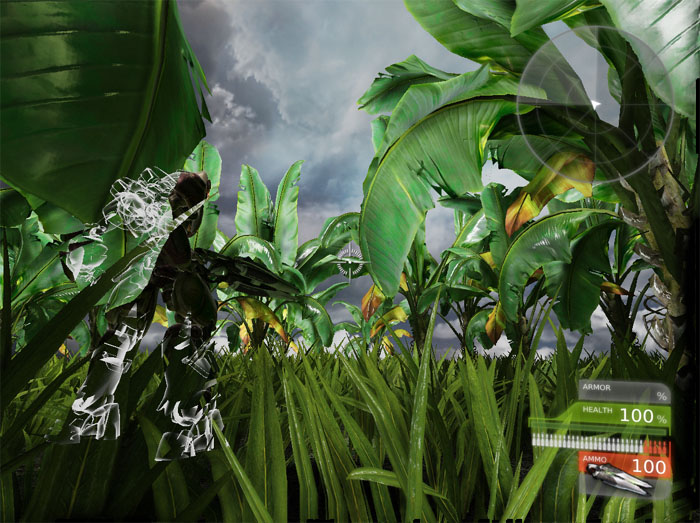
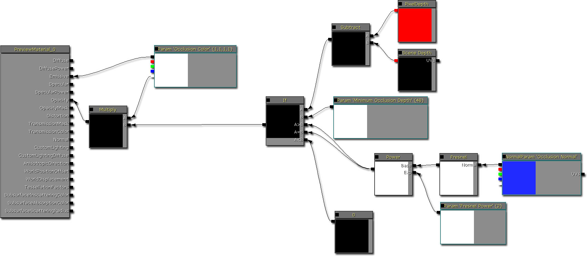

UDN
Search public documentation:
DevelopmentKitGemsRenderingOccludedActorsCH
English Translation
日本語訳
한국어
Interested in the Unreal Engine?
Visit the Unreal Technology site.
Looking for jobs and company info?
Check out the Epic games site.
Questions about support via UDN?
Contact the UDN Staff
日本語訳
한국어
Interested in the Unreal Engine?
Visit the Unreal Technology site.
Looking for jobs and company info?
Check out the Epic games site.
Questions about support via UDN?
Contact the UDN Staff
渲染遮挡的 Actor
最后一次测试是在2011年3月份的UDK版本上进行的。
可以与 PC 兼容
概述

材质
- 根据法线渲染 actor 的网格物体
- 渲染顶部 actor 网格物体的遮挡版本；根据像素进行渲染
- 根据现有像素深度检查新的像素深度
- 如果深度差在某个值之上，那么继续渲染这个遮挡的像素
- 否则，不渲染这个像素

材质属性
为了能够访问这个材质中的 Scene Depth（场景深度）节点，该材质必须是 Translucent（半透明物体）。将这个材质设置为 Unlit 可以帮助提高性能。
相关主题
示例
class OccludedPawn extends UTPawn;
var(Pawn) const SkeletalMeshComponent OccludedMesh;
simulated function SetMeshVisibility(bool bVisible)
{
Super.SetMeshVisibility(bVisible);
if (OccludedMesh != None)
{
OccludedMesh.SetOwnerNoSee(!bVisible);
}
}
simulated function SetCharacterMeshInfo(SkeletalMesh SkelMesh, MaterialInterface HeadMaterial, MaterialInterface BodyMaterial)
{
Super.SetCharacterMeshInfo(SkelMesh, HeadMaterial, BodyMaterial);
if (OccludedMesh != None)
{
OccludedMesh.SetSkeletalMesh(SkelMesh);
}
}
defaultproperties
{
Begin Object Class=SkeletalMeshComponent Name=OPawnSkeletalMeshComponent
Materials(0)=Material'OccludedPawnContent.OccludedMaterial'
Materials(1)=Material'OccludedPawnContent.OccludedMaterial'
DepthPriorityGroup=SDPG_Foreground // 渲染前景图层中的遮挡骨架网格物体
ShadowParent=WPawnSkeletalMeshComponent
ParentAnimComponent=WPawnSkeletalMeshComponent
bCacheAnimSequenceNodes=false
AlwaysLoadOnClient=true
AlwaysLoadOnServer=true
bOwnerNoSee=true
CastShadow=false // 不需要投射阴影
BlockRigidBody=true
bUpdateSkelWhenNotRendered=false
bIgnoreControllersWhenNotRendered=true
bUpdateKinematicBonesFromAnimation=true
bCastDynamicShadow=false // 不需要投射阴影
RBChannel=RBCC_Untitled3
RBCollideWithChannels=(Untitled3=true)
LightEnvironment=MyLightEnvironment
bOverrideAttachmentOwnerVisibility=true
bAcceptsDynamicDecals=false
bHasPhysicsAssetInstance=true
TickGroup=TG_PreAsyncWork
MinDistFactorForKinematicUpdate=0.2f
bChartDistanceFactor=true
RBDominanceGroup=20
MotionBlurScale=0.f
bUseOnePassLightingOnTranslucency=true
bPerBoneMotionBlur=true
End Object
OccludedMesh=OPawnSkeletalMeshComponent
Components.Add(OPawnSkeletalMeshComponent)
CamOffset=(X=16.0,Y=64.0,Z=-52.0)
}
class OccludedGameInfo extends UTDeathmatch;
defaultproperties
{
DefaultPawnClass=class'OccludedPawn'
}
相关主题
限制
下载
- 下载这篇说明中使用的源代码和内容。(OccludedPawn.zip)